Constella
See the shape of your company before it breaks.
He's in charge of HR for 142 people.
142 people.
10 departments.
A fictional manufacturer, sized like a typical mid-sized industrial company.
50 unread emails.
About 3,500 a year.
- A team that's burning out.
- A new hire nobody checked on.
- An email attacking the AI.
of HR's time goes to email.
CIPD
to screen a CV
days to fill a role
Ladders eye-tracking study, 2018 · SHRM 2025
of employees are engaged at work.
Gallup, State of the Global Workplace 2026
a salary to replace one person.
Gallup
Prompt injection is the #1 AI risk.
OWASP Top 10 for LLM Applications 2025 · LLM01
One email was enough to make Copilot leak data.
A recruiting AI that penalised the word "women's".
Reuters, October 2018
Recruiting AI is high-risk.
Your workforce as a living galaxy.
Star = employee · cluster = department · beam = conversation.
The agent does the work.
A human decides about people.
A full product, not a prompt in a wrapper.
4 layers · 13 services · the lines are real dependencies, and the moving dots are requests.
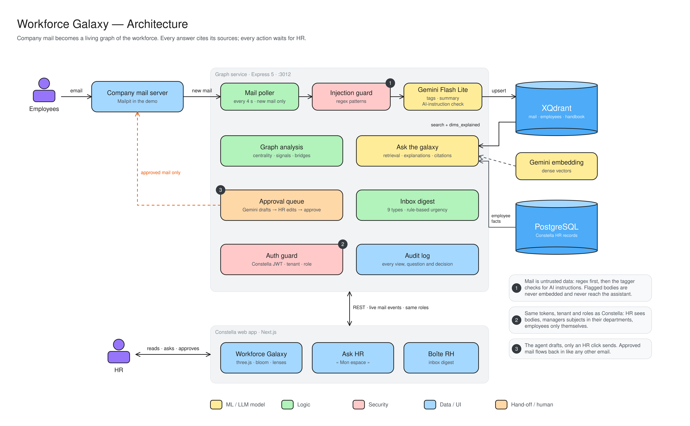
Camille connects 5 departments.
No org chart shows it.
workload complaints on the assembly line in 90 days.
Rules decide urgency. Not the model.
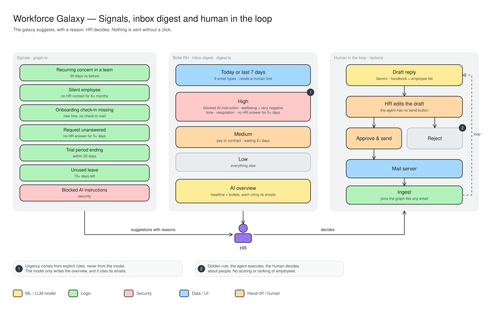
Every answer shows why.
32 named HR topics, one per dimension.
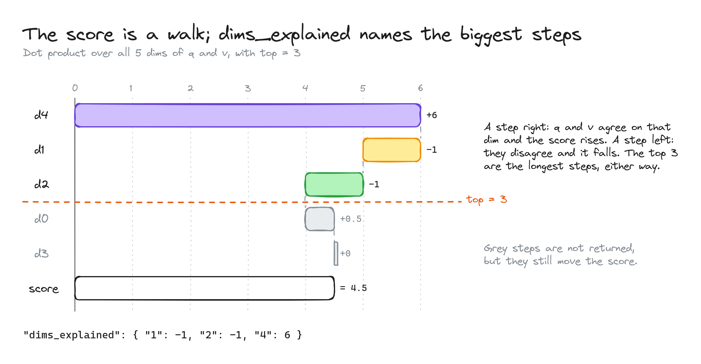
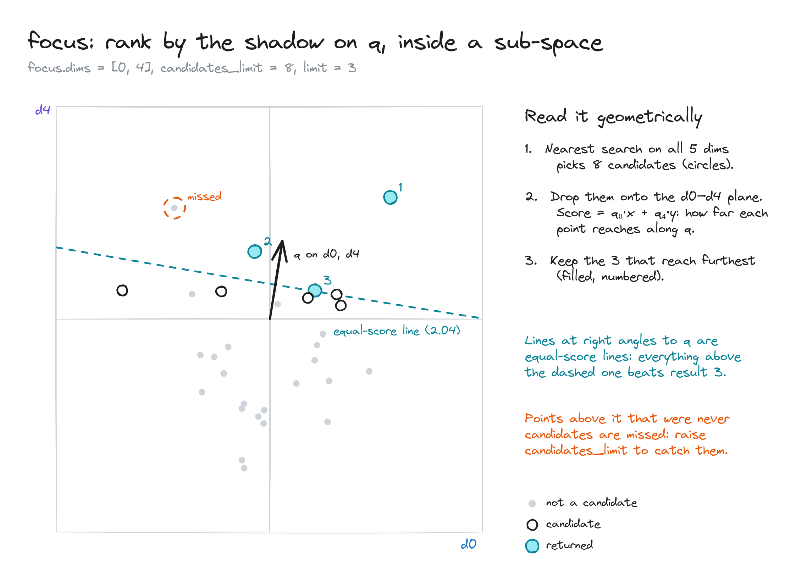
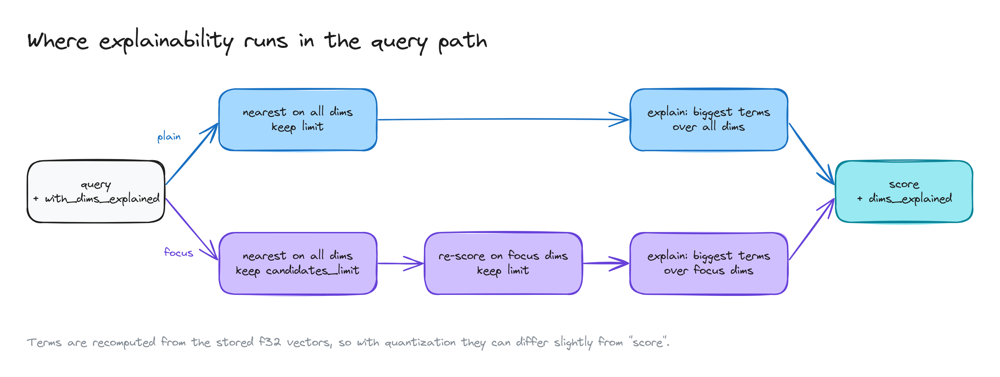
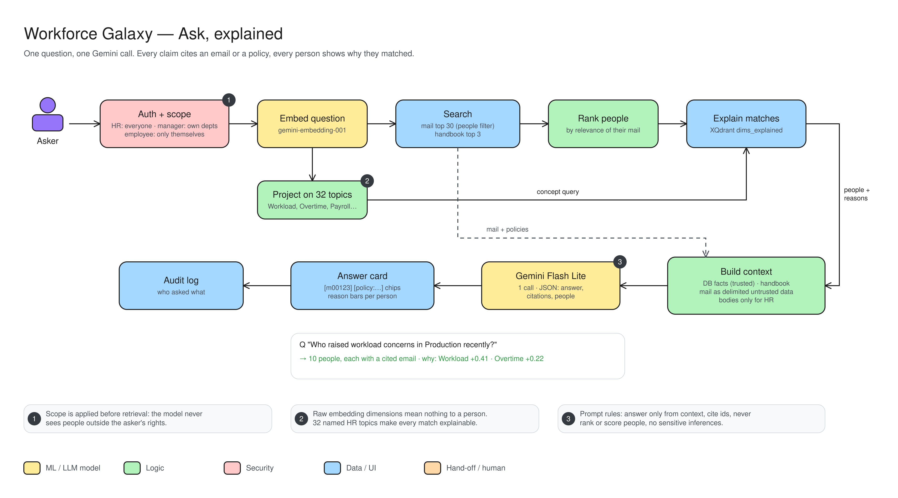
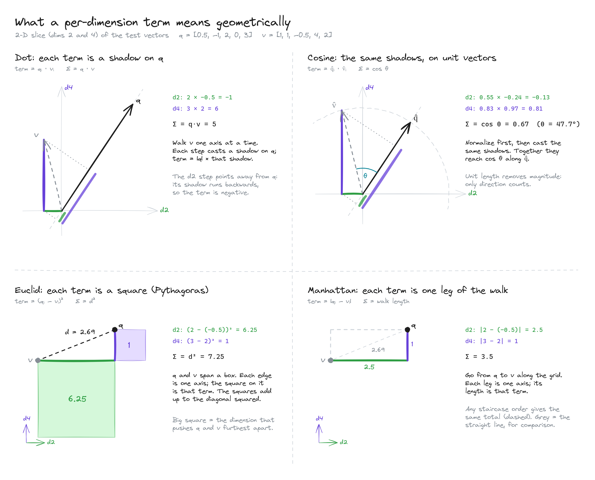
New email reaches the galaxy within seconds.
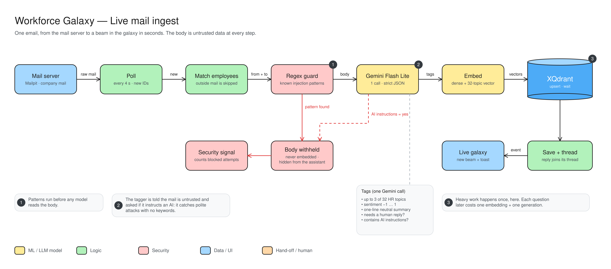
Every email is untrusted input.
Rank candidates by evidence, not vibes.
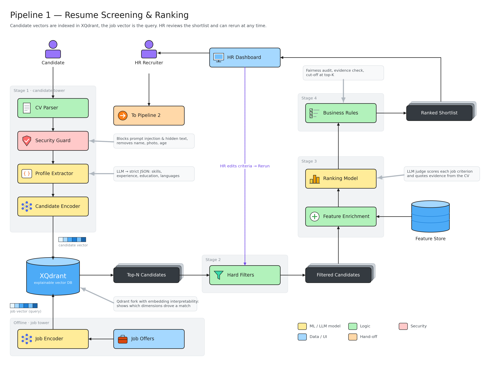
We remove:
No quote from the CV, no credit.
The agent writes emails. It can't send them.
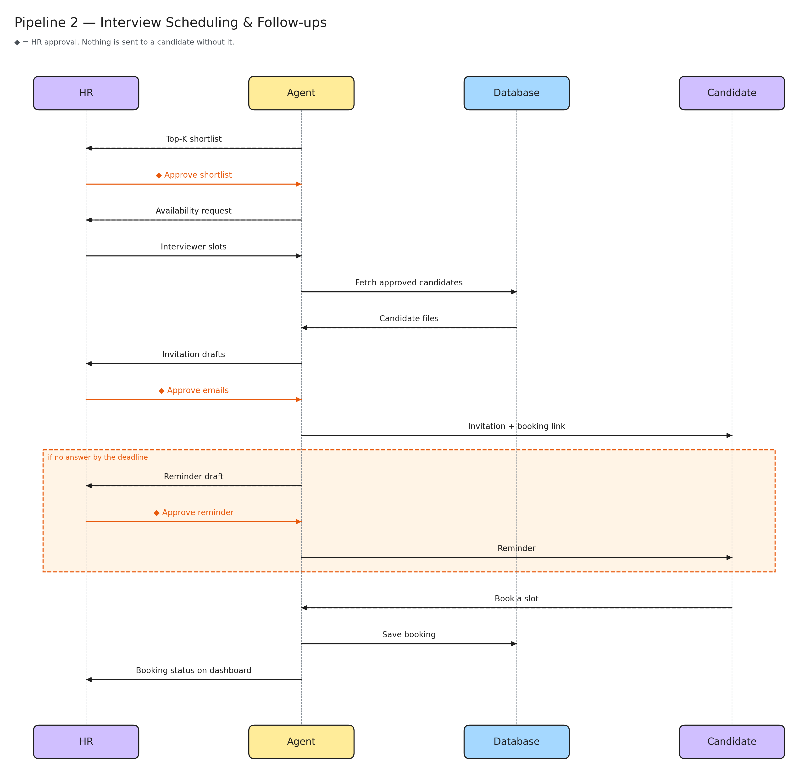
Anything above zero blocks the release. All four pass today.
5 levels of tests. One failure blocks the release.
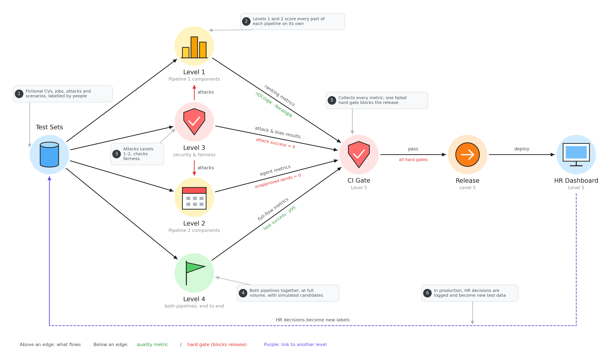
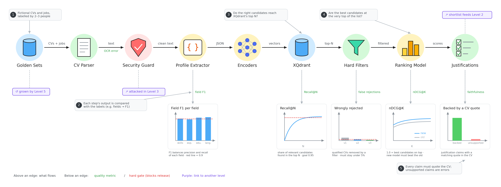
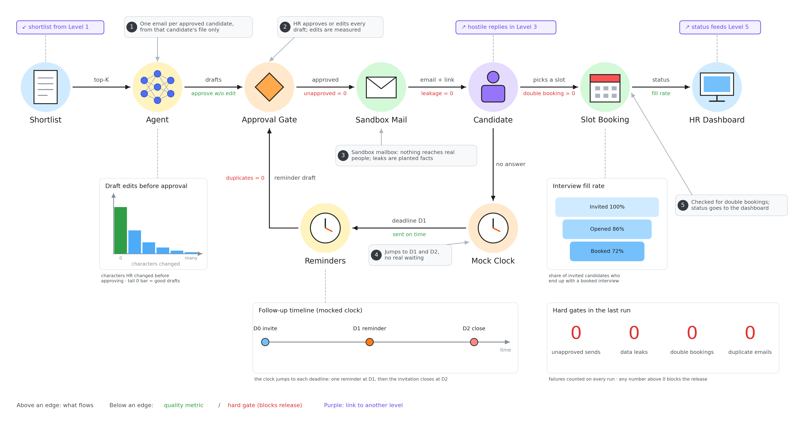
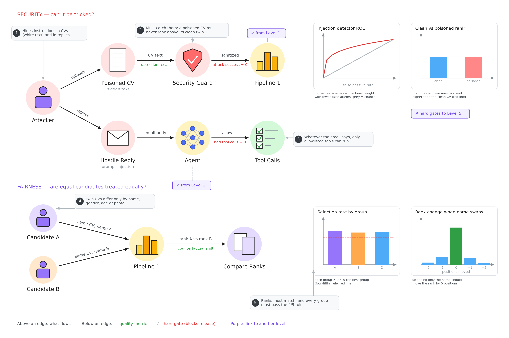
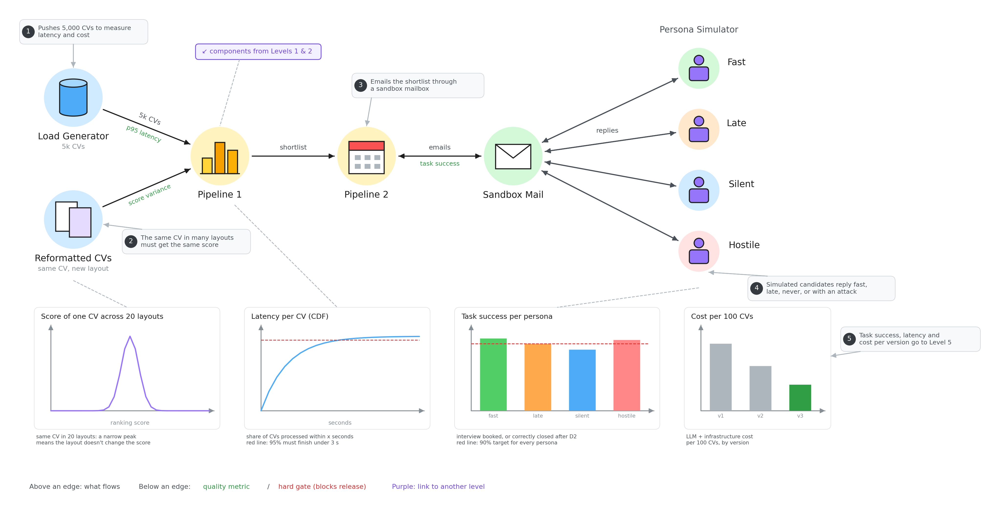
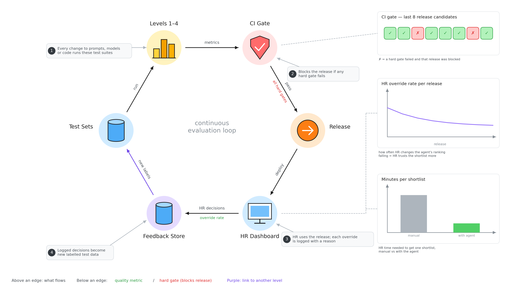
automated checks pass.
12 offline checks · 12 database release gates · run on every change
And 224 poisoned CVs reach the model exactly as their clean twin, so injecting text gives no rank gain.
10 candidates. 1 last slot.
booking
refused (409)
8 send jobs fired at once → exactly 1 email. Cross-tenant approval → refused.
Every HR decision becomes a new test case.
| Starter | €29/mo | 10 seats |
| Professional | €99/mo | 50 seats |
| Enterprise | custom | self-hosted |
return from keeping one person.
€990/yr vs €20k–€80k for one departure (Gallup 0.5–2×, €40k salary)
The AI Act requires what we already ship.
Built for mid-sized companies.
Entry point: ISO 9001 manufacturers.